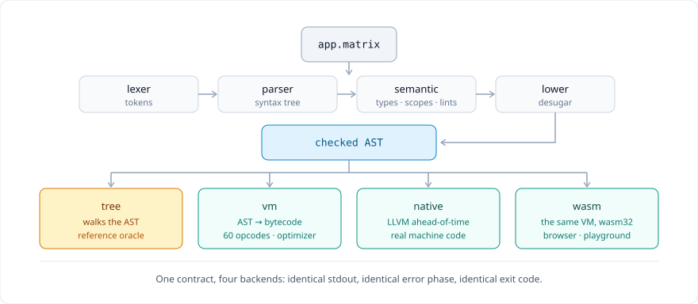
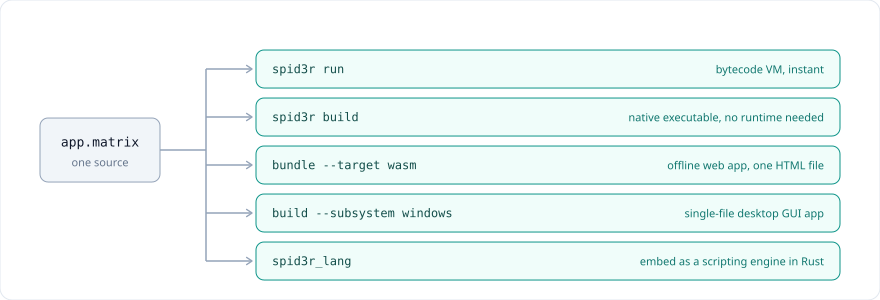
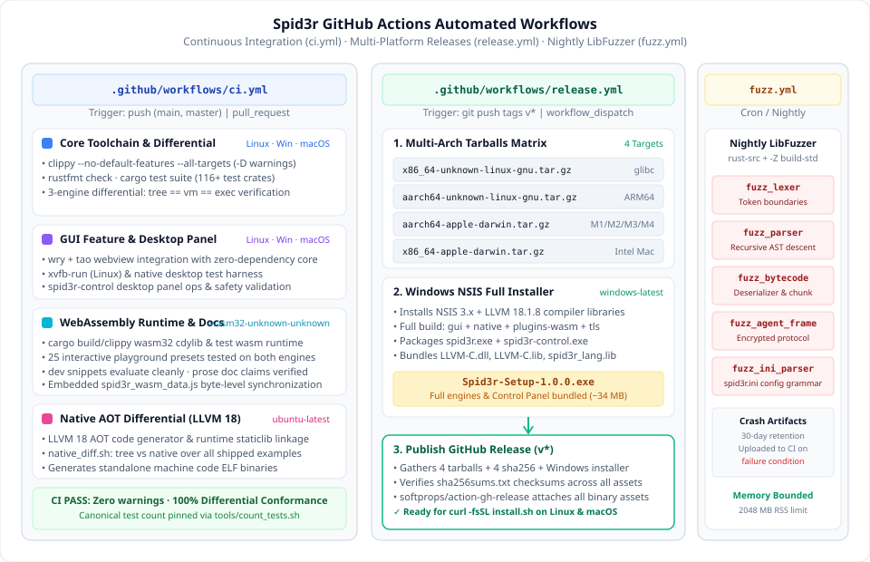
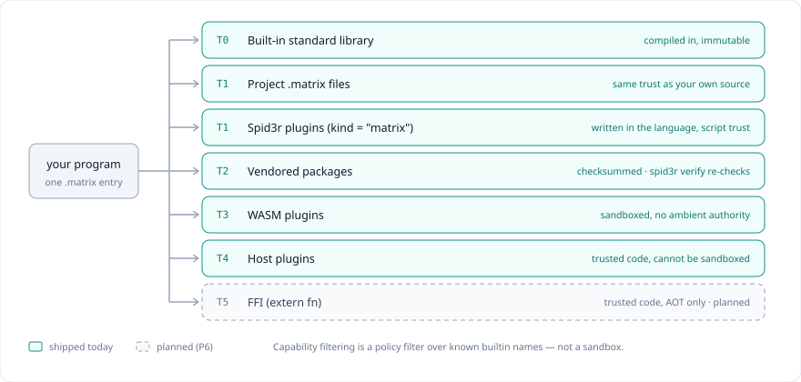
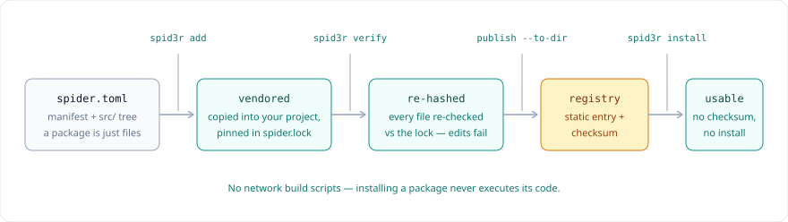
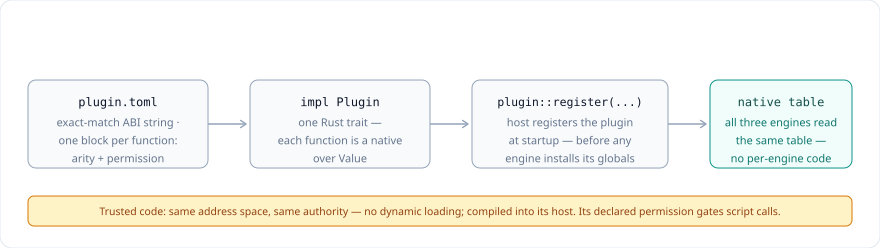
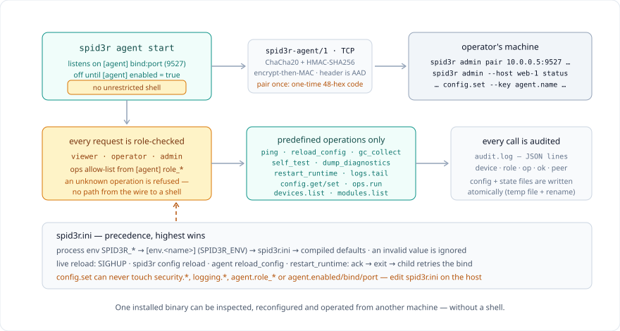
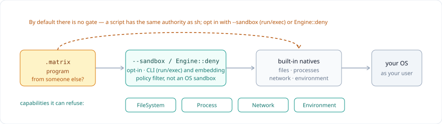
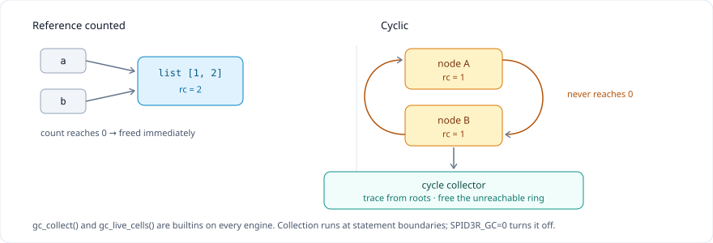

Spid3r Developer Portal & Complete Language Reference
Welcome to the official developer manual for Spid3r. This guide explains every single detail of the language: how it works, its grammar, type system, object-oriented model, data structures, concurrency runtime, standard library, and how to execute code directly in your browser.
01. Introduction to Spid3r
Spid3r is a modern, high-performance, memory-safe, embeddable general-purpose programming language built from scratch in Rust with zero external dependencies.
It combines clean, expressive C/JavaScript-style syntax with the safety guarantees of managed memory, the mathematical power of NumPy/BLAS-style contiguous matrices and vectors, the concurrency model of Erlang/Go channels, and an instant WebAssembly compiler that lets you run complete programs inside any browser.
- Zero External Dependencies: The entire compiler, bytecode virtual machine, AST interpreter, standard library (including cryptographic primitives, regex engines, date-time calendars, and compression algorithms) is written in pure, self-contained Rust.
- Dual Execution Engines: Run programs with the high-speed
--engine vm(bytecode register/stack virtual machine) or the pure reference--engine tree(AST tree-walk interpreter) with 100% byte-for-byte behavioral parity (program stdout, exit codes, and side effects). - Zero-Leak Tracing Garbage Collection: Deterministic mark-and-sweep cycle collector with interior-mutable cell headers and weak references.
- Native WebAssembly Core: Zero-overhead compilation target exportable as a 100% self-contained linear-memory engine running in web browsers, Node.js, Deno, and Edge Workers.
📦 Installing Spid3r
Spid3r is lightweight and self-contained: one binary, no runtime to install, and no Visual C++ Redistributable (the C runtime is linked statically). Only GUI mode borrows the system webview — WebView2 on Windows, WebKit on macOS/Linux. You can install it on Windows, Linux, or macOS in under a minute:
Your First Spid3r Program
spid3r run must define
fn main() { ... } — it is called automatically, so do not invoke it yourself.
The ⚡ Try it Yourself runner and playground execute top-level code directly
(they synthesize an empty main if needed). If you copy a snippet to a
.matrix file and run it on the CLI, wrap the statements in
fn main() { ... return 0; }. Helper fn/class/enum
declarations stay at top level.
Let's start with a classic "Hello, World!" program. You can execute this code immediately in your browser by clicking ⚡ Try it Yourself » below:
// 1. Hello World in Spid3r
fn main() {
println("Hello, World!");
let language = "Spid3r";
let year = 2026;
println("Welcome to the " + language + " developer guide! (v1.0.0)");
return 0;
}
02. How Spid3r Works: Compiler & VM Pipeline
Understanding the Spid3r internal execution pipeline helps you write highly optimized code and leverage both the VM and AOT native backends.

| Phase | Component | Responsibility | Output Artifact |
|---|---|---|---|
| 1. Lexical Analysis | src/lexer/mod.rs |
DFA-based tokenizer recognizing radix literals (0x, 0o, 0b),
scientific float notation (1.5e3), Unicode escapes (\u{1F600}), and
desugaring string interpolation holes ({var}). |
Stream of Token structs with line/col spans |
| 2. Syntax Parsing | src/parser/mod.rs |
Top-down recursive descent + Pratt precedence parser. Enforces strict maximum statement nesting of 64 levels to prevent call stack exhaustion. | Abstract Syntax Tree (ast::Program) |
| 3. Semantic Analysis | src/semantic/mod.rs |
Scope resolution, variable declaration verification, constant folding, class member visibility
checking (public / private), interface contract compliance, and dead code
detection. |
Validated AST or descriptive compiler diagnostic |
| 4. Lowering Pass | src/lower/mod.rs |
Desugars high-level syntax into core primitives: converts ?? into null checks,
value-position if into branch blocks, for (k, v) in map into iterator
lookups, and destructuring tuples into temporary bindings. |
Desugared Low-level AST |
| 5. Dual Execution | src/vm/ & src/interpreter/ |
Bytecode VM: Compiles AST to compact bytecode (.matrixc) and runs on a
fast register-stack virtual machine.Tree Interpreter: Walks the AST directly for reference parity and differential audit testing. |
Live execution, captured stdout, exit status |
| 6. Memory Management | src/value/gc.rs & src/value/mod.rs |
Tracing mark-and-sweep garbage collection with cell tracking, weak references, and zero-leak cyclic object reclamation. | Reclaimed heap cells |
The Spid3r Toolchain CLI
The spid3r command-line executable provides a complete developer environment:

| Command | Usage | Description |
|---|---|---|
spid3r run <file.matrix> |
spid3r run --engine vm main.matrix |
Compile and execute program. Flags: --engine tree|vm, --prof (prints
per-opcode execution profiling counts), --budget N (stop after roughly N steps with the
fatal error execution budget exhausted — for untrusted code), --max-steps N
(documented alias of --budget; specify only one of the two), --max-call-depth N
(cap the call stack depth — VM and tree engines, default 1000, propagated to tasks and modules),
--sandbox (deny filesystem, network, process and environment access; denied calls raise
a catchable sandboxed: … access denied error). |
spid3r check <file.matrix> |
spid3r check main.matrix --deny-warnings |
Lex, parse, and semantic check without executing. Lints: unused variables, unused parameters, unreachable code. |
spid3r compile <file.matrix> |
spid3r compile app.matrix -o app.matrixc |
Compile source file into standalone binary bytecode (.matrixc). Use --dump
to inspect disassembled bytecode opcodes. Output is written in the version-3 container format with a
SHA-256 integrity checksum over the payload. |
spid3r disasm <file.matrixc> |
spid3r disasm app.matrixc |
Load a compiled bytecode file and print human-readable disassembly. Exits 4 if the file is corrupt or fails its integrity checksum. |
spid3r build <file.matrix> |
spid3r build app.matrix --release |
Compile into a standalone native machine-code executable for your operating system. Flags:
--release, -o <path>, --target <triple>,
--icon app.ico, --subsystem console|windows, --allow-gui,
--embed <path>, --bytecode <file.matrixc>,
--bundle-runtime, --product-name, --version.
|
spid3r exec <file.matrixc> |
spid3r exec app.matrixc |
Directly execute a pre-compiled bytecode file on the virtual machine with instant startup. Flags:
--sandbox (same capability denials as run --sandbox — this is the
untrusted-bytecode distribution path). A corrupt or checksum-invalid .matrixc exits with
code 4. |
spid3r fmt <files...> |
spid3r fmt --check src/ |
Canonical code formatter. Idempotent and preserves code semantics. --check exits 1 if
files require formatting. |
spid3r repl |
spid3r repl |
Interactive Read-Eval-Print-Loop for rapid prototyping and testing expressions. |
spid3r debug <file.matrix> |
spid3r debug app.matrix --break 12 |
Interactive CLI debugger: breakpoints, step, next, locals inspection, backtrace, and source listing. |
spid3r gui <file.matrix> |
spid3r gui window.matrix |
Run an interactive desktop GUI application backed by native WebViews. Flags:
--html <path>, --dry-run, --engine tree|vm (the VM also
runs a .matrixc argument directly); or --payload <exe> to run a
program embedded by build --embed straight out of the executable, with its assets served
from memory (--persist keeps the webview profile on disk). A payload carrying a
.matrixc entry runs on the VM.
|
spid3r bundle <file> |
spid3r bundle app.matrix --target wasm |
Bundle project into a distribution package (wasm, desktop, or
android).
|
spid3r test [--filter S] [--list] |
spid3r test --filter math |
Run every examples/*.matrix (or a project's tests/) through the
three-engine differential: tree, VM, and compile+exec must agree. |
spid3r bench [--runs N] [--compare] |
spid3r bench --compare --runs 5 |
Time benchmarks/*.matrix (best of N); --compare pits tree against VM,
--gate fails on a regression.
|
spid3r lsp |
spid3r lsp |
Language Server over stdio: diagnostics, hover, definition, references, rename, symbols, completion, semantic tokens, code actions and formatting. |
spid3r info |
spid3r info --json |
Runtime information, one self-describing report. Flags: --json,
--html, --no-redact (local operator only). Same collector as
spid3rinfo(). |
spid3r config |
spid3r config get agent.port |
Read and write spid3r.ini. Subcommands: get KEY,
set KEY VALUE, list, path, validate,
reload, init. |
spid3r config validate |
spid3r config validate |
Print validation problems (exit 1 when any, 0 when clean); a broken SPID3R_INI
pin is reported as one of those problems. Local diagnostics keep policy values such as
security.basedir and paths.* raw so operators can see which entry is
wrong; credential-like values are hashed. An unknown flag (e.g. --bogus) is a usage
error (exit 2). |
spid3r config init [PATH] [--force] |
spid3r config init ./spid3r.ini --force |
Write a commented default ini. --help prints the config usage instead of writing a
file named --help; without --force it refuses to overwrite an existing
ini (exit 2). config save refuses to persist while the ini pin is broken. |
spid3r control config validate |
spid3r control config validate |
Agent-side validation; exits 1 and prints errors to stderr when the config is
valid:false (it no longer prints a blank line and exits 0). |
spid3r agent |
spid3r agent start |
Local management agent. Subcommands: start, pair [--role R] [--name N],
status, ops. Listens on [agent] bind:port (default
127.0.0.1:9527). No unrestricted shell. |
spid3r admin |
spid3r admin --host web-1 ping |
Remote administration client. Pair first with spid3r admin pair <host:port> <code>,
then call operations against the paired name. |
spid3r init [dir] |
spid3r init my_project |
Create a project skeleton (spider.toml + src/main.matrix). |
spid3r install [--update] |
spid3r install |
Resolve path/git dependencies into vendor/ and write
spider.lock; --update re-resolves instead of honouring the locked commits.
|
spid3r add <name> |
spid3r add mathlib --path ../mathlib |
Declare a dependency in spider.toml and vendor it in one step. Sources:
--path P, --git URL [--rev R], or --version V for the local
registry. --version alongside a path/git source is a constraint. If the dependency does
not resolve the manifest is restored byte-for-byte, so a typo cannot leave the project broken.
|
spid3r remove <name> |
spid3r remove mathlib |
Delete the declaration from [dependencies], prune vendor/<name>/,
and rewrite spider.lock so the project stays verifiable.
|
spid3r tree |
spid3r tree |
Print the declared dependency tree with each package's locked version and origin. A path dependency's own manifest is followed, so transitive path dependencies appear nested. |
spid3r verify |
spid3r verify |
Re-hash every vendored package against the sha256 recorded in
spider.lock. Exits 1 and names the package, with both hashes, if a vendored file was
edited by hand; also reports a vendored directory that no lock entry covers.
|
spid3r search <query> |
spid3r search math --local |
Find packages by name in the local registry (SPID3R_REGISTRY) and in
vendor/. v1 is local-only: there is no network index yet.
|
spid3r publish --to-dir <dir> |
spid3r publish --to-dir ../registry |
Write <dir>/<name>/<version>/ containing spider.toml,
src/ and a sha256.txt — the layout the local registry resolver reads.
Republishing an existing version is refused rather than overwritten.
|
spid3r plugin abi|list|check |
spid3r plugin check examples/plugins/hello-wasm |
Inspect the plugin contract: abi prints the version string this build
implements, list shows what the plugin search path would load, and
check <dir> validates one directory against ABI v1 using the loader's own
code path, without registering anything. Exit codes: 0 valid, 1 invalid, 2 usage.
|
spid3r modules <file> |
spid3r modules main.matrix --tree |
List every module a program imports as origin<TAB>path, where origin is
disk, vendor, embedded or plugin;
--tree prints the dependency graph. Nothing is executed — this is the command to reach
for when a build fails and you need to know which file an import actually named.
|
spid3r dist [-o out] |
spid3r dist |
Compile the project entry named by spider.toml into
target/<package>.matrixc.
|
spid3r pack / unpack |
spid3r pack -o dist/app.tar |
Archive spider.toml + src/ into a tarball, and extract one again with
spid3r unpack <archive> [dir].
|
spid3r version / help |
spid3r version |
Print the toolchain and language versions, or the full command reference. |
Automated GitHub Actions Workflows
Every change, tag, and schedule triggers automated GitHub Actions workflows (.github/workflows) to guarantee multi-platform reproducibility, strict clippy checks, differential engine validation, and automated multi-architecture releases:

ci.yml), multi-architecture releases (release.yml), and continuous nightly libfuzzer (fuzz.yml).Module Resolution
Every backend resolves import "name" through one implementation, so the tree
interpreter, the bytecode VM and the AOT compiler cannot disagree about which file an import names. The
search order is fixed, and spid3r modules prints which root won:
| # | Root | Origin label |
|---|---|---|
| 1 | The importing file's own directory | disk |
| 2 | SPID3R_PATH (a ;-separated list) |
disk |
| 3 | ./stdlib, relative to the working directory |
disk |
| 4 | stdlib/ beside the executable, or above it |
disk |
| 5 | vendor/ from the nearest enclosing package |
vendor |
| 6 | The stdlib table compiled into the binary | embedded |
Each candidate is tried as written and then with a .matrix suffix. Disk always wins over the
embedded table, which is what lets a project pin a patched stdlib/semver.matrix; the embedded
table is the last resort that makes a single-file app work on a machine with no stdlib/ at all.
An import spec may not escape these roots: an absolute path, a drive letter, angle brackets or a
.. component is rejected with error[semantic]: invalid module path on every
backend. (Only the tree walker enforced that before resolution was unified, so import "../x"
used to load on two engines and fail on the third.)
A vendored package is a directory: vendor/mathlib/lib.matrix is imported as
import "mathlib/lib". Which root a module came from — and therefore how much you should trust it
— is the subject of the next section.
The Ecosystem: Packages, Plugins and Trust
Third-party code reaches a program through seven routes, and they do not carry the same authority. The tiers below are the whole trust model; anything not on this list is not a supported extension point.

| Tier | What | Guarantee | Status |
|---|---|---|---|
| T0 | Built-in stdlib | Embedded, immutable, no disk override from the install tree | shipped |
| T1 | Project .matrix files |
Same trust as the project's own source | shipped |
| T1 | Spid3r plugins (kind = "matrix") |
Written in the language and loaded from disk; script authority, like your own source | shipped |
| T2 | Vendored packages | Checksummed against spider.lock; spid3r verify re-checks |
shipped |
| T3 | WASM plugins | Sandboxed — no ambient authority, manifest-declared permissions, fuel-limited | shipped |
| T4 | Host plugins | Trusted code. Not sandboxed, and cannot be | shipped |
| T5 | FFI (extern fn) |
Trusted code, AOT-only; spid3r run rejects it at compile time |
shipped |
Two things this page will not overstate. Capability filtering is a policy filter, not a
sandbox: it replaces known builtin natives with stubs that return a catchable
capability denied error, and a host function a plugin registers keeps whatever authority it was
given — no filter can take that back. And dependency installation never executes package
code — there are no build scripts, unlike Cargo — which is a real security advantage and is
deliberate.
Packages
A package is a directory with a spider.toml and a src/ tree. spid3r add
declares it and vendors it in one step, spid3r tree shows what that resolved to,
spid3r verify proves the vendored bytes are the ones the lock file describes, and
spid3r publish --to-dir writes a static registry entry with a checksum. None of it touches the
network, and none of it runs the package's code.

Plugins
Host plugins work today. A plugin declares itself in a plugin.toml, implements one trait, and is
registered by its host at startup. There is no dynamic loading: a plugin is compiled into
the host that uses it, because a native function is a Rust function pointer over Value, and
Value has no stable representation that could cross a C ABI boundary.
The payoff of the design is that registration merges the plugin's functions into
stdlib::native_defs() — the one list the tree interpreter, the bytecode VM and the AOT backend
all install from. A plugin function needs no per-engine code.

register rejects, before any plugin code runs: an abi that is not
exactly spid3r-plugin-abi-1; a function the manifest never declared, or one whose arity
disagrees; a permission the manifest's capabilities does not announce; a duplicate
name; and a function that would shadow a builtin — write_file must not be interceptable. A
plugin whose start() fails is recorded as Failed and simply never offers its
functions, so one broken plugin cannot take the host down.
The permission gate is the same mechanism as for builtins: Engine::deny(Capability::Environment)
replaces hello_env with a stub returning a catchable
capability denied error, while the plugin's other functions keep working.
A complete sample lives at examples/plugins/hello-host/ — a manifest, a PluginHost
implementation, a host binary and two scripts, including one that demonstrates the gate. See
docs/PLUGINS.md for the full contract.
WASM plugins: the sandboxed route
A WASM plugin is the opposite of a host plugin: it exists only as a file. The toolchain reads
plugin.toml and plugin.wasm from the plugin search path and interprets the module,
so
spid3r run can call it without the binary being rebuilt.
Each manifest function is one export with the signature (i32, i32) -> i64: the host writes the
arguments into linear memory, calls the export, and reads the result back. There is no dispatch table inside
the guest. The wire format is a small typed binary encoding — null, int,
float, bool, string, list — rather than JSON, so a plugin
author does not have to ship a JSON parser into the sandbox.
The sandbox is structural: the host builds an empty linker, so a module that imports anything
— fd_write, a clock, randomness — fails to instantiate. Nothing is revoked at run time, because
nothing was ever granted. Every call also carries a fuel budget, so a loop {} traps instead of
hanging the interpreter; that is the one place a limit is enforceable below the language, and it is
what makes running an untrusted plugin safe.
spid3r build and spid3r dist deliberately do not load plugins: a
standalone native executable cannot link one. A program that calls a plugin function is rejected at compile
time, with a note explaining why — not compiled into a binary that throws at run time.
| Route | Status |
|---|---|
Spid3r plugins (kind = "matrix", loaded from disk) |
works — no feature flag, no build step |
| Host plugins (compiled into the host) | works |
WASM plugins (kind = "wasm", loaded from disk) |
works — wasmi, behind the default plugins-wasm feature |
FFI (extern fn) |
works — AOT only; spid3r run rejects it at compile time |
spid3r plugin abi|list|check |
works — abi prints the version, list reports the search path,
check validates a directory against ABI v1
|
spid3r plugin enable/disable |
not implemented — a plugin is discovered per run, so there is no persistent enable list |
Dynamic loading of native code (dlopen) |
deliberately not implemented — there is no stable ABI to load against |
The distinction that matters: a host plugin is trusted code — same address space, same authority, and
no filter can revoke what it already has. A WASM plugin is the only route that can be sandboxed, and it is
the one to prefer for anything you did not write. Both samples are in the repository:
examples/plugins/hello-host and examples/plugins/hello-wasm.
The full developer guide — the manifest contract, the guest ABI, the wire format and a troubleshooting table — is its own page:/r Writing Spid3r Plugins →
Native Machine-Code Compilation (AOT)
Spid3r includes an Ahead-Of-Time (AOT) native compiler powered by LLVM. With spid3r build, any
.matrix script can be compiled directly into a standalone machine-code executable that runs
natively without any external runtime dependencies:
Desktop Executables: Custom Icon, No Terminal
A plain spid3r build produces a console binary: on Windows it allocates a terminal
window for the process, and the file carries the default toolchain icon. Three flags turn that into an
ordinary desktop application (a fourth adds version metadata):
| Flag | Effect |
|---|---|
--icon <path.ico> |
Embeds the icon into the PE resource directory as RT_ICON plus
RT_GROUP_ICON. Every size stored in the .ico is preserved, so Explorer, the
taskbar and Alt-Tab each pick the resolution they need. Without the flag the icon shipped beside
spid3r.exe is embedded, so a build started from any directory still gets one;
SPID3R_ICON overrides that default.
|
--subsystem windows |
Passes -subsystem:windows and pins the entry point with
-entry:mainCRTStartup,
setting the PE optional header's subsystem field to 2 (GUI) instead of 3
(console). Windows then allocates no console for the process. --subsystem console is the
default. Windows-only; ignored by the ELF and Mach-O linkers.
|
--allow-gui |
Permits a build of a program that calls GUI natives even though the AOT runtime does not link the GUI bridge. Without it the compiler rejects such a program before linking. |
--embed <path> |
Appends a file or directory to the finished executable, after linking, so --icon and
--version still apply. Paths stay relative to the source file, and the body is
XOR-obfuscated — obfuscation, not encryption. spid3r gui --payload <exe> runs the
result with no sidecar files. Repeatable.
|
--bytecode <file.matrixc> |
Ships a compiled program instead of its source: appends the .matrixc to the payload and
compiles the launcher from a three-line run_payload_strict() stub, so no application
code, symbol names or string literals reach the native image. The strict form refuses to run when
the payload is missing or truncated instead of falling back to an installed toolchain.
gui --payload prefers a .matrixc entry and runs it on the VM.
|
--bundle-runtime |
Also appends the running spid3r.exe to the payload, so the built app starts its own
runtime copy and runs on a machine with no Spid3r installed. Extracted to
%LOCALAPPDATA%\Spid3r\runtime\<hash>\ on first launch. Implies a payload.
|
--product-name / --version |
Writes RT_VERSION metadata, displayed in the file's Properties → Details tab. |
--allow-gui exists because the AOT runtime registers the standard library natives but not the
GUI bridge, so gui_on, gui_eval and friends resolve to null in a
native binary. The supported pattern is a launcher: the executable does its startup work,
then hands the program off to the installed toolchain's spid3r gui runtime. One native call does
all of it — run_payload() finds a runtime (payload first, then %SPID3R_EXE%, the
normal install, PATH), extracts the embedded copy when there is one, anchors the working
directory to the executable's folder, and starts gui --payload hidden. Writing the handoff by
hand is only necessary for custom startup behaviour.
Two entry points, and the difference matters for a self-contained build. run_payload() falls
back to an installed spid3r when the executable carries no payload at all — which is what a
hand-written launcher that expects a global install wants. run_payload_strict() treats a
missing payload as a hard error ("payload is missing or truncated; rebuild it"); it is what
--bytecode generates, and what a launcher should call when the build is supposed to carry its
own runtime, so that deleting the trailer cannot redirect the launch to whatever spid3r.exe is
on PATH.
run_payload() already does both. They matter when you write the handoff yourself, which is
only necessary for custom startup behaviour.
- Working directory ≠ program folder. Windows starts a process with an inherited
directory, so a shortcut, the Run dialog, a scheduled task or
Start-Processall begin somewhere else. Relative paths likeui/index.htmlthen miss, and a GUI-subsystem process exits with no visible message because it has no console to print to. Callexe_path()andchdir(dirname(exe_path()))first. - The handoff inherits the console. Spawning without
map("hidden", true)opens a terminal window for the child. That option passesCREATE_NO_WINDOWon Windows; on other platforms it is ignored.
Shipping a Single File
Two flags turn a build into one self-contained executable: --bundle-runtime appends the
running spid3r.exe to the payload, so the target machine needs no Spid3r install, and
--bytecode ships the compiled program instead of its source.
| Payload entry | What it is |
|---|---|
app.matrixc |
The compiled program. No .matrix is shipped. |
ui/index.html, ui/app.js, ui/styles.css |
The interface, served from memory — nothing is unpacked to disk. |
__spid3r_runtime/spid3r.exe |
The runtime, extracted to %LOCALAPPDATA%\Spid3r\runtime\<hash>\ on first
launch and reused afterwards. |
--allow-gui is not needed with --bytecode: the launcher is compiled from
the three-line run_payload() stub above, which mentions no GUI natives. It is only required
when the application itself is compiled into the binary (--embed app.matrix).
--bytecode does and does not buy- It removes the source text. With
--embed app.matrixthe payload carries your source, and the obfuscation is not encryption — anyone can read it back out. With--bytecodethe payload carries bytecode, and the launcher carries no application code, symbol names or string literals. - It is not secrecy. The VM is open source, so a determined person can write a decompiler for the bytecode. It raises the cost from "open a text file" to "reverse-engineer a bytecode format". Do not put secrets in a client binary.
- One system dependency remains. The WebView2 runtime (default on Windows 11, on
Windows 10 via Edge) — and the matching system webview on macOS/Linux. Everything else is
self-contained: the toolchain and every executable
spid3r buildproduces link the C runtime statically and import only system DLLs, so no Visual C++ Redistributable is needed.LLVM-C.dllis delay-loaded and is only touched byspid3r build, so a GUI app never needs it.
03. Syntax, Variables & Data Types
Spid3r syntax is clear, familiar, and unambiguous. Semicolons (;) terminate statements, and
variables are declared with let or const.
Variables & Constants
Variables are declared with let and can be reassigned with new values. Constants are declared
with const and evaluated at compile-time:
// Variables are mutable through reassignment:
fn main() {
let counter = 10;
counter += 5;
println("counter: " + string(counter));
// Constants are immutable and resolved at compile time:
const MAX_BUFFER = 1024;
const APP_NAME = "Spid3rApp";
println("Buffer: " + string(MAX_BUFFER) + " for " + APP_NAME);
// Optional, nullable (T?), and union (A | B) type annotations are supported:
let port: int | string = 8080;
let host: string? = "127.0.0.1";
let is_secure: bool = false;
println("Server listening on " + host + ":" + string(port));
return 0;
}
Primitive Data Types & Literals
Spid3r features six core primitive value types:
| Type | Literal Syntax | Examples | Description |
|---|---|---|---|
int |
Decimal, Hex, Octal, Binary | 42, 0xFF, 0o755, 0b1010_1011 |
64-bit signed two's complement integer (-2^63 to 2^63 - 1). Supports digit
separators (1_000_000) and an n suffix for arbitrary-precision big integers
(12345678901234567890n). |
float |
Standard, Scientific | 3.14159, 1.5e3, 1e-5, 2E+4 |
64-bit IEEE 754 double precision. Overflow produces clean compile errors. Special values:
nan(), inf().
|
bool |
Keywords | true, false |
Boolean truth values. Conditionals evaluate truthiness: the falsy values are null,
false, 0, 0.0 and "" (empty string); everything
else — including empty lists [] — is truthy.
|
string |
Double quotes, Raw r"..." |
"hello", r"C:\path\file", r#"raw "quote""# |
Immutable UTF-8 scalar sequence. Supports negative indexing (s[-1]), character slices,
raw literals, and interpolation (use \{ / \} for literal braces). |
null |
Keyword | null |
Represents the intentional absence of any object value. Supported by null-coalescing
(??) and optional chaining (?.). |
bytes |
Constructor | bytes([65, 66, 67]), bytes("text") |
Contiguous 8-bit unsigned byte buffer (0..255). Capped at 16 MiB. Direct hex and base64
conversions. |
Type Casting with as
Spid3r supports explicit, safe type casting using the as keyword (similar to Rust). It desugars
into the corresponding conversion builtins:
x as int: Desugars toint(x)x as float: Desugars tofloat(x)x as string: Desugars tostring(x)x as bool: Desugars tobool(x)
// Hex, binary, and scientific float literals:
fn main() {
let hex_mask = 0xFF;
let bin_flags = 0b1010_1100;
let scientific = 1.25e4;
println("Hex 0xFF as decimal: " + string(hex_mask));
println("Binary flags: " + string(bin_flags));
println("Scientific 1.25e4: " + string(scientific)); // 12500.0
// Explicit 'as' casting:
let raw_str = "128";
let cast_int = raw_str as int;
let float_val = cast_int as float;
let is_valid = cast_int as bool;
println("cast_int + 2: " + string(cast_int + 2));
println("float_val / 2: " + string(float_val / 2.0)); // 64.0
println("is_valid: " + string(is_valid));
return 0;
}
Spid3r Reserved Keywords (Complete Reference)
Spid3r defines exactly 40 reserved keywords. Reserved keywords have dedicated syntactic meaning in the compiler and cannot be used as variable, parameter, function, class, or module identifiers.
| Category | Keyword | Syntax / Pattern | Description |
|---|---|---|---|
| Declaration | let |
let x = 10; |
Declares a mutable variable. Reassignable with = or compound operators. |
| Declaration | const |
const MAX = 100; |
Declares an immutable compile-time constant. |
| Declaration | fn |
fn add(a, b) { ... } |
Defines a named function, method, or anonymous closure. |
| Control Flow | if |
if x > 0 { ... } |
Branching statement and expression evaluating truthiness. |
| Control Flow | elif |
elif x == 0 { ... } |
Alternative conditional branch (also supports else if). |
| Control Flow | else |
else { ... } |
Default fallback branch when preceding conditions are falsy. |
| Control Flow | while |
while cond { ... } |
Pre-condition loop executing while condition remains truthy. |
| Control Flow | for |
for x in list |
Collection iteration (for in) and C-style 3-clause loops. |
| Control Flow | in |
for item in items |
Iterator membership keyword in for-in loops. |
| Control Flow | break |
break; |
Terminates loop execution immediately. |
| Control Flow | continue |
continue; |
Skips remaining loop body to start next iteration. |
| Control Flow | return |
return value; |
Returns from function or closure with optional value. |
| Control Flow | match |
match val { ... } |
Pattern matching expression with pattern guards and destructuring. |
| Error Handling | try |
try { ... } |
Guards block against runtime throws and exceptions. |
| Error Handling | catch |
catch err { ... } |
Catches thrown values or errors from a preceding try. |
| Error Handling | finally |
finally { ... } |
Guaranteed cleanup block run regardless of throws or returns. |
| Error Handling | throw |
throw "error"; |
Raises a runtime exception carrying any value or string. |
| Logic & Literals | true |
true |
Boolean truth literal. |
| Logic & Literals | false |
false |
Boolean falsity literal. |
| Logic & Literals | null |
null |
Literal representing absence of a reference or object value. |
| Logic & Literals | and |
a and b |
Logical short-circuit conjunction (equivalent to &&). |
| Logic & Literals | or |
a or b |
Logical short-circuit disjunction (equivalent to ||). |
| Logic & Literals | not |
not flag |
Logical negation prefix operator (equivalent to !). |
| OOP | class |
class Shape { ... } |
Declares an object-oriented class template. |
| OOP | interface |
interface Drawable { ... } |
Defines a method contract implemented by classes. |
| OOP | new |
new Dog("Rex") |
Instantiates a class and specifies constructor fn new. |
| OOP | self |
self.field = 10; |
Explicit instance receiver inside class methods and constructors. |
| OOP | super |
super(name); super.m() |
Parent class constructor and method delegation. |
| OOP | extends |
class Sub extends Super |
Establishes single class inheritance. |
| OOP | implements |
class C implements I |
Declares compliance with one or more interfaces. |
| OOP | public |
public fn run(self) |
Marks a class field or method as publicly accessible. |
| OOP | private |
private let secret; |
Restricts field or method access strictly to defining class. |
| OOP | abstract |
abstract class Base |
Declares an abstract class or uninstantiated method signature. |
| Generators & Enums | yield |
yield val; |
Yields from a generator; consume with import "gen" and next(it) (a bare
for x in gen() iterates the generator object, not the stream).
|
| Generators & Enums | enum |
enum Color { Red, Blue } |
Defines an algebraic sum type with unit or payload variants. |
| Concurrency | spawn |
spawn fn() { ... } |
Spawns an asynchronous background task. |
| Concurrency | async |
async fn fetch() { ... } |
Declares an asynchronous cooperative function. |
| Concurrency | await |
await task; |
Suspends execution until a spawned task completes. |
| Modules & Casting | import |
import "math" as m; / import { A, B as C } from "mod"; |
Imports external scripts or standard library modules (whole-module or selective symbol imports). |
| Modules & Casting | as |
val as int |
Type casting and namespace aliasing (import x as y). |
04. Operators, Null Safety & Expressions
Spid3r operators follow standard mathematical and C-precedence rules. It features modern null-coalescing
(??) and optional navigation (?.) for bulletproof null safety.
| Category | Operators | Precedence | Semantics & Behavior |
|---|---|---|---|
| Postfix | ., ?., (), [] |
Highest | Method call, optional field access, indexing, invocation. null?.field safely returns
null without throwing.
|
| Unary | not, -, await |
Very High | Logical negation, arithmetic negation, coroutine join. |
| Type Cast | as |
High | Cast to int, float, string, bool (binds tighter
than multiplication). |
| Multiplicative | *, /, % |
Upper Mid | Multiplication, division, modulo. Integer division truncates towards zero; float division preserves decimals. |
| Additive | +, - |
Mid | Addition (and string concatenation), subtraction. |
| Bitwise Shift | <<, >> |
Lower Mid | Shift left/right on 64-bit integers. Shift amounts must be in 0..=63 (verified by
runtime). |
| Comparison | ==, !=, <, <=, >,
>=
|
Low Mid | Value equality and ordering. Strings compare lexicographically. |
| Bitwise Logic | &, ^, | |
Low | Bitwise AND, XOR, OR (strictly follows standard C precedence: & > ^
> |). |
| Logical | and, &&, or, || |
Very Low | Short-circuiting boolean conjunction and disjunction. |
| Null Coalesce | ?? |
Very Low | Returns the right operand only if the left operand is strictly null.
|
| Assignment | =, +=, -=, *=, /=, %=
|
Lowest | Right-associative target assignment. |
// Bitwise arithmetic with C precedence:
fn main() {
let mask = (1 << 4) | (0b0011 ^ 0b0001) & 0xFF;
println("Calculated bit mask: " + string(mask));
// Null-coalescing '??' (evaluates right side ONLY when left is null):
let user_name = null;
let display_name = user_name ?? "Guest User";
println("Welcome, " + display_name + "!");
// Optional navigation '?.' prevents null dereference crashes:
let account = null;
let balance = account?.wallet?.balance ?? 0.0;
println("Balance: $" + string(balance)); // 0.0
// Chained boolean comparisons:
let x = 15;
if (x >= 10 and x <= 20) { println("x is within [10, 20] range"); }return 0;
}
05. Strings, Slicing & String Interpolation
Strings in Spid3r are immutable, UTF-8 encoded sequences with full negative indexing, Unicode escape sequences, and a complete suite of native methods.
String Interpolation & Raw Strings
Spid3r supports concise string interpolation using {identifier} or {object.field}.
Note: there must be no whitespace inside the braces (e.g. "{name}" works, while
"{ name }" remains literal text for templating compatibility). Escape braces with
\{ and \} when literal braces are needed, or use raw string literals
(r"..." and r#"..."#) where backslashes and braces are never interpreted.
| Method | Signature | Returns | Description |
|---|---|---|---|
.len() |
s.len() or len(s) |
int |
Count of characters in the string. |
.slice(start, end) |
s.slice(0, 3) |
string |
Character-indexed slice. Bounds-checked; negative indices supported on []. |
.upper() / .lower() |
s.upper() |
string |
Uppercase / lowercase copy of the string. |
.trim() |
s.trim() |
string |
Strips leading and trailing whitespace. (Also .ltrim() and .rtrim()). |
.split(sep) |
s.split(",") |
list |
Splits string into a list of substrings by delimiter. |
.replace(from, to) |
s.replace("-", "_") |
string |
Replaces all occurrences of from with to. |
.contains(sub) |
s.contains("key") |
bool |
Returns true if substring exists. |
.starts_with(p) |
s.starts_with("pre") |
bool |
Returns true if string begins with prefix. |
.ends_with(p) |
s.ends_with("suf") |
bool |
Returns true if string ends with suffix. |
.index_of(sub) |
s.index_of("abc") |
int |
First character position of match, or -1 if not found. |
.repeat(n) |
s.repeat(3) |
string |
Repeats string n times. |
.format(args...) |
"{:.2}".format(88.6875) |
string |
Positional formatting with precision rounding ({:.N} rounds half-to-even). |
fn main() {
let text = " Spid3r Language ";
println("Trimmed: [" + text.trim() + "]");
println("Upper: " + text.upper());
println("Slice(2, 8): [" + text.slice(2, 8) + "]");
println("Negative index [-1]: " + "Spid3r"[-1]); // 'r'
// String Interpolation:
let user = "Dev";
let score = 98.5;
println("Welcome {user}! Your score is {score}.");
// Formatting precision with tie-to-even rounding:
let formatted = "Result: {:.2}".format(88.6875);
println(formatted); // "Result: 88.69"
// Split & Join:
let parts = "apple,banana,cherry".split(",");
println("Split count: " + string(len(parts)) + ", second: " + parts[1]);
return 0;
}
06. Control Flow: Conditionals & Loops
Control execution flow using if / elif / else, value-position conditional expressions, C-style
for loops, and collection iterators.
If-Else as Statements and Expressions
In Spid3r, if can be used both as a traditional control statement and as an
expression yielding a value:
fn main() {
let marks = 85;
let letter_grade = "";
// Traditional conditional chain:
if (marks >= 90) {
letter_grade = "A";
} elif (marks >= 80) {
letter_grade = "B";
} elif (marks >= 70) {
letter_grade = "C";
} else {
letter_grade = "F";
}
// 'if' in value-position (conditional expression):
let status = if (marks >= 60) { "Passed" } else { "Failed" };
println("Student Grade: " + letter_grade + " (" + status + ")");
return 0;
}
Loops: while and for
Spid3r supports three versatile loop constructs:
while (condition) { ... }: Standard condition-tested loop.for let i = 0; i < n; i += 1 { ... }: C-style loop with lexical index binding.for item in collection { ... }/for (k, v) in map { ... }: Iterator loop over lists, sets, tuples, and maps.
// 1. C-Style For with break and continue:
let sum_evens = 0;
for let i = 0; i <= 10; i +=1 { if (i % 2 !=0) { continue; } // skip odds if (i> 8) { break; } // early stop
sum_evens += i;
}
println("Sum of evens up to 8: " + string(sum_evens));
// 2. While loop:
let steps = 0;
let n = 12;
while (n > 1) {
if (n % 2 == 0) { n = n / 2; }
else { n = 3 * n + 1; }
steps += 1;
}
println("Collatz steps for 12: " + string(steps));
// 3. For-in over lists and maps:
let fruits = ["Apple", "Orange", "Mango"];
for fruit in fruits {
println("Fruit: " + fruit);
}
let roles = map("Alice", "Admin", "Bob", "Developer");
for (name, role) in roles {
println("{name} has role {role}");
}
07. Functions, Closures & Functional Methods
Functions in Spid3r are first-class values. They can be stored in variables, passed to other functions, returned from closures, and chained using higher-order collection methods.
Function Syntax, Arrow Closures & Default Parameters
Declare functions using fn name(params) -> return_type { ... }, or write concise inline closures
with arrow syntax: x => x * 2, (a, b) => a + b, or
() => "ready". Trailing parameters may specify default scalar or collection literals
(such as items = [] or opts = {}, which allocate a fresh mutable collection on every
call). Unused parameters prefixed with an underscore (such as _event) suppress unused-parameter
compiler warnings.
// Function with default parameter:
fn power(base: int, exp: int = 2) -> int {
let res = 1;
for let i = 0; i < exp; i +=1 { res *=base; } return res; } println("power(3): " + string(power(3))); // 3^2 = 9
println(" power(2, 4): " + string(power(2, 4))); // 2^4 = 16
// Lexical closure that captures outer variable:
fn make_accumulator(start: int) {
let total = start;
return fn(val: int) {
total += val;
return total;
};
}
let acc = make_accumulator(100);
println(" acc(20): " + string(acc(20))); // 120
println(" acc(15): " + string(acc(15))); // 135
// Functional higher-order methods with concise arrow closures (.map, .filter, .reduce):
let nums = [1, 2, 3, 4, 5, 6];
let squared_evens = nums
.filter(x => x % 2 == 0)
.map(x => x * x);
println(" Squared evens: " + string(squared_evens)); // [4, 16, 36]
let sum_all = nums.reduce(0, (acc, n) => acc + n);
println(" Sum via reduce: " + string(sum_all)); // 21
08. Enums, Pattern Matching & Destructuring
Model complex data structures using algebraic sum types (enum) and inspect them with exhaustive
match expressions with pattern guards.
Algebraic Data Types (Sum Types)
Pattern Matching & Destructuring: Spid3r supports deep pattern matching with guards and
unpacking tuple/list structures (e.g. let (x, y) = [100, 200]; or
let (ip, port, proto) = get_server();).
Enums in Spid3r can define both empty unit variants and data-carrying variants. When dispatched with
match, the compiler verifies exhaustiveness and binds inner fields directly:
Unit variants: a unit variant is built with parentheses (Stop()); the
bare name
Stop is the constructor function and is only valid inside a pattern. Using Stop as a
value
produces a confusing "function does not support indexing" error at the match, so always construct
with ().
// 1. Enum with payload variants and unit variants:
enum Command {
Move(x, y),
Rotate(degrees),
Stop
}
fn describe_command(cmd) {
return match (cmd) {
Move(x, y) if x == 0 and y == 0 => "Hold position",
Move(x, y) => "Move to ({x}, {y})",
Rotate(deg) => "Rotate by {deg} deg",
Stop => "Emergency Stop!",
_ => "Unknown command"
};
}
println(describe_command(Move(10, 20)));
println(describe_command(Move(0, 0)));
println(describe_command(Rotate(90)));
println(describe_command(Stop()));
// 2. Destructuring assignments (lists & tuples):
let (x, y) = [100, 200];
println("Destructured list: x=" + string(x) + ", y=" + string(y));
fn get_server_info() {
return tuple("10.0.0.1", 443, "https");
}
let (ip, port, proto) = get_server_info();
println("Server: {proto}://{ip}:{port}");
09. Error Handling: Exceptions & Option / Result
Spid3r combines structured exceptions (try-catch-finally) with functional Rust-style error
combinators (Option and Result).
Try-Catch-Finally Execution Guarantees
The catch block accepts both parenthesized (catch (err) { ... }) and unparenthesized
(catch err { ... }) bindings. The finally block is guaranteed to
execute, even if the try block issues a return, break,
continue, or an unhandled throw.
// 1. Structured try-catch-finally:
fn parse_positive_int(s: string) {
try {
let val = int(s);
if (val <= 0) { throw "value must be positive, got " + string(val); }
return val;
} catch (err) {
println("Caught error: " + string(err));
return -1;
} finally {
println("Cleanup: parse_positive_int completed");
}
}
println("Result 1: " + string(parse_positive_int("42")));
println("Result 2: " + string(parse_positive_int("-5")));
10. Object-Oriented Programming (OOP)
Spid3r provides first-class object-oriented programming: classes, single inheritance (extends),
constructor and method delegation (super), encapsulation (public /
private), and interfaces (implements).
Core OOP Rules & Visibility
- Constructors: The constructor is declared as
public fn new(params) { ... }. Inside the constructor,selfis implicitly bound to the newly allocated instance. - Explicit Receiver: Instance methods explicitly take
selfas their first parameter:public fn method(self, arg) { ... }. - Default Visibility is Private: Any member without an explicit
publickeyword is private to the defining class. The checker enforces this whenever the receiver's class is statically known — an annotated binding (let c: C = C()),new C(), orself— and leaves a receiver whose class is only known at run time unchecked, the same gradual rule the rest of the checker follows. Annotate the binding when you need the guarantee:let c = C(); c.secretis accepted,let c: C = C(); c.secretis rejected. - Single Inheritance: Classes inherit from a single parent class using
class Sub extends Parent. - Super Delegation: Subclasses call
super(args)in their constructor to initialize the parent fields, andsuper.method(args)to delegate to the parent method. - Abstract Classes & Static Methods: Declared with
abstract class Base, abstract classes define method contracts that cannot be instantiated directly. Classes may also declare class-level methods withpublic static fn name(args) { ... }(called directly on the class asClassName.name(args)withoutself).
class Animal {
public let name;
private let energy;
public fn new(name: string) {
self.name = name;
self.energy = 100;
}
public fn speak(self) -> string {
return self.name + " makes a sound";
}
public fn play(self, cost: int) {
self.energy -= cost;
return self.energy;
}
public fn get_energy(self) {
return self.energy;
}
}
class Dog extends Animal {
public let breed;
public fn new(name: string, breed: string) {
super(name); // delegate to Animal constructor
self.breed = breed;
}
public fn speak(self) -> string {
return super.speak() + " -> Woof! (Breed: " + self.breed + ")";
}
}
let pet = new Dog("Rex", "German Shepherd");
println(pet.speak());
println("Initial Energy: " + string(pet.get_energy()));
println("After playing: " + string(pet.play(25)));
Interfaces, Default Methods & Polymorphism
Interfaces define structural method contracts that implementing classes must satisfy. Interfaces can also
provide default method implementations (fn describe(self) -> string { ... }) that implementing
classes inherit automatically unless overridden:
interface Drawable {
fn draw(self) -> string;
fn area(self) -> float;
}
class Circle implements Drawable {
public let radius;
public fn new(r: float) {
self.radius = r;
}
public fn draw(self) -> string {
return "Drawing Circle with radius " + string(self.radius);
}
public fn area(self) -> float {
return 3.14159 * self.radius * self.radius;
}
}
class Rectangle implements Drawable {
public let width;
public let height;
public fn new(w: float, h: float) {
self.width = w;
self.height = h;
}
public fn draw(self) -> string {
return "Drawing Rectangle " + string(self.width) + "x" + string(self.height);
}
public fn area(self) -> float {
return self.width * self.height;
}
}
let shapes = [new Circle(5.0), new Rectangle(4.0, 6.0)];
for s in shapes {
println(s.draw() + " -> Area: " + string(s.area())); // floats keep .0
}
11. Built-in Collections & Advanced Data Structures
Spid3r comes with over 20 built-in, native data structures designed for maximum algorithmic performance. Every container is created via a globally available constructor function.
| Container | Constructor | Core Native Methods | Big-O Complexity |
|---|---|---|---|
| List | list(1, 2) or [1, 2] |
push, pop, get, set, remove(value),
remove_at(i), insert, sort, reverse,
slice, map,
filter, reduce, argsort
|
O(1) append/pop, O(1) index, O(n log n) sort |
| Map | map("k", 1) or {"k": 1} |
get, set, m[k], remove, has,
keys, values, items, len, clear
|
O(1) average lookup/insert (insertion-ordered) |
| Set | set(1, 2) |
add, remove, contains, union,
intersect/intersection, difference, is_subset
|
O(1) membership and insertion; unique members |
| Bag | bag() |
add, remove, count_of, contains,
len, is_empty, clear
|
Multiset (counts duplicates). No set algebra — use set for that. |
| Tuple | tuple(1, "a", true) |
t[0], len(t), immutability, destructuring |
O(1) index, zero-overhead fixed-size sequence |
| Bytes | bytes([65, 66]) / bytes("s") |
get, set, slice, to_hex, to_base64
|
O(1) byte index, contiguous memory up to 16 MiB |
| Stack | stack() |
push(x), pop(), peek(), len(),
is_empty()
|
O(1) LIFO push/pop (throws on empty pop) |
| Queue | queue() |
push(x), pop(), peek(), len(),
is_empty()
|
O(1) FIFO enqueue/dequeue |
| Deque | deque() |
push_front, push_back, pop_front, pop_back,
peek_front, peek_back
|
O(1) double-ended queue operations |
| Heap | heap("min") / heap("max") |
push(x), pop(), peek(), change_priority,
merge
|
O(log n) push/pop, O(1) peek |
| Trie / Tree | trie() |
insert(word), contains(word), starts_with(prefix),
with_prefix(prefix)
|
O(L) string prefix matching where L is word length |
| Graph | graph("directed") |
add_node, add_edge, neighbors, find_path,
bfs, dfs, cycle
|
Adjacency list with native Dijkstra & BFS pathfinding |
| RingBuffer | ring_buffer(capacity) |
push, pop, peek, len |
O(1) bounded circular buffer (overwrites oldest) |
| Also built in | linked_list(), hash_table(n), bst(),
binary_tree(), priority_queue(), vec(),
singly_linked_list(), doubly_linked_list()
|
See docs/DATA_STRUCTURES.md |
Same native containers as the highlighter; omitted from this table in earlier drafts |
Every container prints with a type prefix, so a logged value is never ambiguous:
[1, 2] for a list, map{a: 1} for a map, set{1, 2}
for a set, stack() for an empty stack. Note that bag() takes
no constructor arguments — add members with add and read
multiplicities with count_of; a bag deliberately has no set
algebra, so use set when you need union or
difference.
// 1. Lists with in-place sorting and slicing:
fn main() {
let items = [40, 10, 50, 20, 30];
items.sort();
println("Sorted items: " + string(items));
println("First: " + string(items[0]) + ", Last: " + string(items[-1]));
// 2. Map (keeps insertion order):
let student = map("name", "David", "grade", 95, "major", "Computer Science");
student["advisor"] = "Dr. Smith";
println("Keys: " + string(student.keys()));
println("Has advisor: " + string(student.has("advisor")));
// 3. Set algebra:
let set_a = set(1, 2, 3, 4);
let set_b = set(3, 4, 5, 6);
println("Union: " + string(set_a.union(set_b)));
println("Intersection: " + string(set_a.intersect(set_b)));
// 4. Min-Heap Priority Queue:
let min_heap = heap("min");
min_heap.push(50);
min_heap.push(10);
min_heap.push(30);
println("Min element popped: " + string(min_heap.pop())); // 10
// 5. Trie (Prefix String Tree):
let words = trie();
words.insert("apple");
words.insert("app");
words.insert("application");
words.insert("banana");
println("Words starting with 'app': " + string(words.with_prefix("app")));
return 0;
}
12. Linear Algebra: Vector & Matrix Computing
Spid3r provides high-performance, contiguous 64-bit float memory buffers for 1-D vectors and 2-D matrices with zero external dependencies. It replaces NumPy with zero installation required.
Matrix Indexing Architecture
A Spid3r matrix stores its elements in one contiguous row-major buffer. Note:
- 2-D Indexing: Use
m.get(row, col)andm.set(row, col, value)to address cells by row and column. - Flat Indexing:
m[i]reads or writes a flat cell starting from the top-left (i.e. cellrow * cols + col).m[i]returns a float, som[i][j]is not used. - Dimensions: Read with
m.rows()andm.cols(). Total cell count islen(m) == rows * cols.
| Operation | Matrix Method | Vector Method | Description |
|---|---|---|---|
| Multiplication | A.mul(B) |
v1.dot(v2) |
Matrix product ($A \cdot B$) / Vector dot product ($\sum u_i v_i$). |
| Hadamard | A.hadamard(B) |
v1.mul(v2) |
Element-wise Schur product ($A \odot B$). |
| Transpose | A.transpose() |
— | Returns transposed matrix ($A^T$). |
| Determinant | A.det() |
— | Matrix determinant $\det(A)$ using Gaussian pivoting. |
| Inverse | A.inverse() |
— | Computes $A^{-1}$ via LU decomposition. Throws if matrix is singular. |
| Linear Solver | A.solve(b) |
— | Solves $A X = B$ with partial pivoting. |
| Statistics | A.mean(), A.sum() |
v.mean(), v.variance(), v.std() |
High-precision scalar and axis-wise statistics. |
| NumPy I/O | save_npy(path, A) |
load_npy(path) |
Save / Load standard NumPy v1.0 .npy binary files. |
// 1. Vector arithmetic and Euclidean L2 norm:
fn main() {
let v1 = vector([1.0, 2.0, 3.0]);
let v2 = vector([4.0, 5.0, 6.0]);
println("Vector dot product: " + string(v1.dot(v2))); // 1*4 + 2*5 + 3*6 = 32.0
println("Vector Euclidean Norm: " + string(v1.norm()));
println("Vector mean: " + string(v1.mean()));
// 2. Matrix creation & row-major indexing:
let A = matrix(2, 2, 0.0);
A.set(0, 0, 4.0);
A.set(0, 1, 7.0);
A.set(1, 0, 2.0);
A.set(1, 1, 6.0);
println("Matrix A determinant: " + string(A.det())); // 4*6 - 7*2 = 10.0
println("Matrix A trace: " + string(A.trace())); // 4 + 6 = 10.0
// 3. Matrix Inverse via LU decomposition:
let A_inv = A.inverse();
println("A^-1 top-left: " + string(A_inv.get(0, 0))); // 0.6
println("A^-1 top-right: " + string(A_inv.get(0, 1))); // -0.7
// 4. Solving linear systems A * x = b:
let b = vector([18.0, 10.0]);
let x = A.solve(b);
println("Solution x: [" + string(x[0]) + ", " + string(x[1]) + "]"); // [3.8, 0.4]
return 0;
}
13. Concurrency, Tasks & Message Channels
Spid3r runs tasks on an M:N scheduler: a pool of OS threads (sized to the machine, growing on demand up to
SPID3R_MAX_WORKERS, default 256) pulling from one shared ready queue, with no global interpreter
lock — two CPU-bound tasks really do run at the same time. Spawn background tasks, communicate over buffered
channels, and synchronize with mutexes.
Tasks, Join, and Async-Await
- Task Spawning:
spawn fn() { ... }spawns a concurrent task and immediately returns ataskhandle. - Joining Tasks:
task.join()blocks until the task finishes and returns its result (or throws if the task encountered an unhandled exception). - Async / Await: Functions marked
async fn name() { ... }can useawait taskorawait channel. - Channels:
let ch = channel();creates a buffered message channel — an unbounded FIFO queue.ch.send(val)appends and returns immediately (it never blocks, so a producer cannot deadlock on a full queue), andch.recv()blocks until a value is available. Values are dynamically typed, like every other Spid3r binding. - Mutex:
let mu = mutex(initial_value);guards critical sections withmu.lock()andmu.unlock().
// 1. Spawning a concurrent background task:
fn main() {
let worker = spawn fn() {
let acc = 0;
for let i = 1; i <= 100; i += 1 { acc += i; }
return acc;
};
// Wait for task completion:
let result = worker.join();
println("Sum 1..100 from worker task: " + string(result));return 0;
}
14. Standard Library & System API Reference
Spid3r includes a comprehensive set of built-in global functions and 29 first-party modules covering networking, cryptography, formats, compression, civil calendars, and machine learning.
Console, System & Filesystem Built-ins
Spid3r provides essential global primitives for terminal output, user input, filesystem operations, and mathematical calculations:
| Category | Function | Signature | Description |
|---|---|---|---|
| Console | println / print |
println(msg) / print(msg) |
Prints message to standard output (with or without newline). |
| Console | eprint |
eprint(msg) |
Prints message to standard error stream. |
| Console | read_line |
read_line() |
Reads a line of input from standard input (returns string). |
| Runtime | spid3rinfo |
spid3rinfo(mode?) |
Comprehensive runtime information (version, OS, config, modules, memory). Default returns a map.
Modes: "html", "json", "text", "map". Optional
second truthy argument disables redaction. |
| Runtime | config_get |
config_get(key) |
Live spid3r.ini value as a string, or null. Sensitive-looking keys are
redacted. |
| Runtime | config_set |
config_set(key, value) |
Set a known, validated key in the live configuration. |
| Runtime | config_reload |
config_reload() |
Re-read spid3r.ini; returns the path that was loaded (or ""). |
| Filesystem | read_file |
read_file(path) |
Reads complete file contents into a UTF-8 string; returns result
(ok(string) or err(string)). |
| Filesystem | write_file |
write_file(path, data) |
Writes string or bytes to specified path; returns result (ok(null) or
err(string)).
|
| Filesystem | file_exists |
file_exists(path) |
Returns true if path exists on disk (bool). |
| Filesystem | is_dir / is_file |
is_dir(path) / is_file(path) |
Type predicates: true only when the path is a directory / a regular file (symlinks
followed). Any other outcome is false — never throws. |
| Filesystem | file_size / file_mtime |
file_size(path) / file_mtime(path) |
Size in bytes (ok(int)) and modification time in Unix seconds (ok(float));
a missing path or a directory is err(string). |
| Filesystem | list_dir |
list_dir(path) |
Entry names of a directory as ok(list) — sorted, excluding . and
..; err(string) for a missing path or a non-directory.
|
| Filesystem | remove_file / file_delete |
remove_file(path) |
Deletes file at path from disk; returns result (ok(null) or
err(string)).
|
| Filesystem | cwd / chdir |
cwd() / chdir(path) |
Read (ok(string)) or change (ok(null)) the process working directory.
Process-global; embedding hosts should treat chdir as a startup-time call. |
| Filesystem | exe_path |
exe_path() |
Absolute path of the running executable as result (ok(string) /
err(string)). Use it to locate files shipped next to the binary: the working directory is
not the program's folder when a process is started from a shortcut, the Run dialog, a
scheduled task, or Start-Process.
|
| Process | spawn_process |
spawn_process(cmd, args[, opts]) |
Starts a child process and waits for it, returning its exit code as result
(ok(int) / err(string)). opts is an optional map; the key
hidden (bool) passes CREATE_NO_WINDOW on Windows so the child
gets no console window. On other platforms hidden is accepted and ignored.
|
| Filesystem | env / env_set |
env(name) / env_set(name, value) |
Read an environment variable as option, or set one for env() and later
spawned processes (ok(null) / err(string)). |
| Paths | path_join / basename / dirname / path_ext |
path_join(a, b, ...) etc. |
Pure lexical path helpers: no filesystem access; both / and \ count as
separators on every OS and results normalize to /. A later absolute component resets
path_join; dirname("/") = "/"; a leading dot is not an
extension.
|
| Result | is_ok / is_err |
is_ok(res) / is_err(res) |
Tests whether a result value is ok or err (returns bool).
|
| Math | abs / sqrt |
abs(n) / sqrt(n) |
Absolute value and square root. |
| Math | pow / clamp |
pow(b, e) / clamp(x, lo, hi) |
Exponentiation and range bounding. |
| Math | min / max |
min(a, b) / max(a, b) |
Minimum / maximum of two values. |
| Math | random_int |
random_int(min, max) |
Clock-seeded pseudo-random integer in [min, max] (use random_bytes for
cryptographic tokens). |
| Math | random_float |
random_float([min, max]) |
Uniform pseudo-random 64-bit float in [0.0, 1.0) (or [min, max) when
specified). |
| Runtime (Monotonic) | now / now_ms / elapsed_ms |
now() / now_ms() / elapsed_ms() |
Monotonic elapsed timer in milliseconds (starts at 0 on first call; for measuring intervals and benchmarks). |
| Runtime (Wall clock) | unix_time / unix_ms |
unix_time() / unix_ms() |
Current Unix epoch timestamp in whole seconds / milliseconds (for real-world dates, times, and expiration). |
| Runtime | type_of / len |
type_of(val) / len(container) |
Runtime type inspection and element count. Calling len() on a result
prompts calling .unwrap(). |
Cryptography, Passwords & Encodings
| Function | Signature | Standard | Description |
|---|---|---|---|
sha256 |
sha256(str_or_bytes) |
FIPS 180-4 | Returns 64-character lowercase hexadecimal SHA-256 digest. |
hmac_sha256 |
hmac_sha256(key, message) |
RFC 2104 | HMAC-SHA256 signature as lowercase hex string. |
pbkdf2_sha256 |
pbkdf2_sha256(pw, salt, iters) |
RFC 8018 | Password key derivation returning 32-byte key as hex. |
sha512 |
sha512(str_or_bytes) |
FIPS 180-4 | Returns 128-character lowercase hexadecimal SHA-512 digest. Accepts the same string-or-bytes input
convention as sha256. |
ed25519_keypair |
ed25519_keypair(seed) |
RFC 8032 | Derive a keypair from a 32-byte hex seed (or call with no arguments for OS entropy). Returns a map
with public (64 hex chars) and secret (128 hex chars = seed‖public). |
ed25519_sign |
ed25519_sign(secret_hex, message) |
RFC 8032 | Sign a message; returns the 64-byte signature as 128 lowercase hex characters. |
ed25519_verify |
ed25519_verify(public_hex, message, sig_hex) |
RFC 8032 | Verify a signature; returns true/false, never an error — malformed input
verifies as false. Strict verification: rejects non-canonical S, small-order
public keys and off-curve points. Not constant-time; fine for verifying third-party data, avoid
secret-key operations in hostile environments. |
bcrypt_hash |
bcrypt_hash(pw, cost=10) |
OpenBSD | Generates canonical $2b$... bcrypt password hash. |
bcrypt_verify |
bcrypt_verify(pw, hash) |
Constant-Time | Verifies password against bcrypt hash in constant time (bool). |
argon2 |
argon2(pw, salt, t, m, p, var, len) |
RFC 9106 | Argon2 ("i", "d", or "id") password hasher. |
secure_compare |
secure_compare(a, b) |
Constant-Time | Timing-attack resistant byte equality comparison (bool). |
base64_encode / decode |
base64_encode(d) / decode(s) |
RFC 4648 | Standard Base64 encoder/decoder (decode returns bytes). |
hex_encode / decode |
hex_encode(d) / decode(s) |
Two hex chars/byte | Converts string or bytes to lowercase hex (and vice versa). |
Serialization, Compression & Regular Expressions
| Function | Signature | Format | Description |
|---|---|---|---|
json_parse |
json_parse(json_str) |
RFC 8259 | Parses JSON text into Spid3r maps, lists, numbers, booleans, and null. Supports \uXXXX
surrogate pairs. |
json_write |
json_write(val) |
RFC 8259 | Serializes any Spid3r structure into a compact JSON string. |
parse_csv |
parse_csv(text, opts?) |
RFC 4180 | Parses CSV with automatic type inference into {"headers": [...], "rows": [...]}. |
gzip_compress / gunzip |
gzip_compress(bytes) |
RFC 1952 | Compresses and decompresses GZIP streams with CRC-32 integrity checking. |
regex_match |
regex_match(pat, text) |
Thompson NFA | Linear-time regex matching (supports \d, \w, \s, groups,
ranges, anchors). |
regex_find_all |
regex_find_all(pat, text) |
Thompson NFA | Returns a list of all matching substrings in text. |
datetime_parts |
datetime_parts(epoch_sec) |
Civil Calendar | Decomposes Unix epoch timestamp into year, month, day,
hour, minute, second, weekday.
|
format_datetime |
format_datetime(sec, fmt) |
Strftime | Formats timestamp with %Y-%m-%d %H:%M:%S in UTC. |
// 1. JSON serialization and parsing:
fn main() {
let config = map("app", "Spid3r", "port", 8080, "features", ["wasm", "gc", "blas"]);
let json_text = json_write(config);
println("JSON Output: " + json_text);
let parsed = json_parse(json_text);
println("Parsed app name: " + parsed["app"]);
// 2. Cryptographic hashing:
let hash = sha256("spid3r-token-secret");
println("SHA-256: " + hash);
let sig = hmac_sha256("api-secret-key", "user=100&action=login");
println("HMAC-SHA256: " + sig);
// 3. Regular Expressions (Thompson NFA):
let email = "developer@spid3r.dev";
let is_valid = regex_match("^[a-zA-Z0-9._%+-]+@[a-zA-Z0-9.-]+\\.[a-zA-Z]{2,}$", email);
println("Is valid email: " + string(is_valid));
let numbers = regex_find_all("\\d+", "ports 8080, 8081, 9090");
println("Extracted port numbers: " + string(numbers));
// 4. Date & Time (Howard Hinnant Civil Calendar):
let parts = datetime_parts(0); // Epoch 0
println("Epoch 0 date: " + string(parts["year"]) + "-0" + string(parts["month"]) + "-0" +
string(parts["day"]));
println("Formatted: " + format_datetime(0, "%Y-%m-%d %H:%M:%S UTC"));
return 0;
}
The 29 Standard Library Modules (stdlib/)
Spid3r includes 29 zero-dependency standard library modules in stdlib/, automatically
discoverable via import "name" as alias; or selective symbol imports
(import { ClassA, helper as h } from "name";). In Spid3r, top-level symbols in imported files must
be marked with the public modifier (e.g., public fn, public class,
public interface, public enum, public let) to be exported; unexported
names are private to their module and cannot be accessed externally.
| Module | Import Statement | Primary Purpose |
|---|---|---|
web.matrix |
import "web" as w; |
Express-style router, HTTP request/response handler, URL param decoding. |
dataframe.matrix |
import "dataframe" as df; |
Pandas-style tabular dataframes: column selection, filtering, group-by, joining. |
stats.matrix |
import "stats" as st; |
Descriptive statistics, normal/poisson distributions, linear regression, ANOVA. |
ml.matrix |
import "ml" as ml; |
K-Means clustering, logistic regression, decision trees, k-nearest neighbors. |
mathx.matrix |
import "mathx" as mx; |
Advanced math: complex numbers, polynomial roots, fast Fourier transform (FFT). |
toml.matrix |
import "toml" as toml; |
TOML v1.0 configuration parser and serializer. |
yaml.matrix |
import "yaml" as yaml; |
YAML document parser and validator. |
xml.matrix |
import "xml" as xml; |
XML element tree parser, attributes, text extraction, serialization. |
tz.matrix |
import "tz" as tz; |
IANA tzdata 2026e timezone conversions (598 authoritative zones). |
unicode.matrix |
import "unicode" as uc; |
UCD 15.1 NFC/NFD normalization, full case folding, combining mark stripping. |
smtp.matrix |
import "smtp" as smtp; |
SMTP client with authentication, TLS upgrade, MIME multi-part attachments. |
ftp.matrix |
import "ftp" as ftp; |
FTP client with active/passive transfers, directory listings, binary downloads. |
session.matrix |
import "session" as sess; |
Web session management with signed cookies and HMAC tamper protection. |
middleware.matrix |
import "middleware" as mw; |
CORS headers, rate limiting, request logging, authentication middleware. |
testkit.matrix |
import "testkit" as tk; |
Unit test runner with assertions, test suites, and colorized reporting. |
assert.matrix |
import "assert" as a; |
Minimal test assertions (`ok`, `eq`, `fail`) for scripts and tests. |
mock.matrix |
import "mock" as mk; |
Test doubles — stubs and spies — for isolating units under test. |
http.matrix |
import "http" as http; |
HTTP/1.1 web framework: router, request/response helpers, static files. |
fastcgi.matrix |
import "fastcgi" as fcgi; |
FastCGI responder for running a Spid3r app behind nginx/Apache. |
multipart.matrix |
import "multipart" as mp; |
`multipart/form-data` parsing for file uploads. |
event.matrix |
import "event" as ev; |
Event loop over the readiness primitive (non-blocking I/O). |
gen.matrix |
import "gen" as gen; |
Generators built on the scheduler (`yield`-style lazy sequences). |
bigint.matrix |
import "bigint" as bi; |
Arbitrary-precision integers (also behind the `123n` literal). |
complex.matrix |
import "complex" as cx; |
Complex numbers with arithmetic and magnitude helpers. |
decimal.matrix |
import "decimal" as dec; |
Exact fixed-point decimals for money-style arithmetic. |
rational.matrix |
import "rational" as rat; |
Exact rational numbers (fractions) with normalization. |
semver.matrix |
import "semver" as sv; |
Semantic-version parsing, comparison and range matching. |
uuid.matrix |
import "uuid" as uuid; |
UUID v4 generation (CSPRNG-backed). |
ssh.matrix |
import "ssh" as ssh; |
SSH/SFTP by driving the system OpenSSH client. |
A module is imported by name, but its exported functions keep the module's own prefix — do not guess a bare name. The ones most often mistyped:
| Import | Real export names |
|---|---|
import "uuid" as uuid; |
uuid.uuid_v4() — not uuid4() |
import "toml" as toml; |
toml.toml_parse(text), toml.toml_get(m, path) — not
parse()
|
import "event" as ev; |
ev.start(), ev.run(loop, timeout_ms), ev.stop(loop),
ev.on_readable(loop, conn, cb) — not new()
|
bcrypt_hash (builtin) |
bcrypt_hash(pw, cost=10), bcrypt_verify(pw, hash) — no
import needed; cost must be 4–31
|
14b. Runtime Configuration & Remote Management
Spid3r has spid3r.ini,
spid3rinfo(), and an encrypted management agent. One installed binary can be inspected,
reconfigured, and operated from another machine — without a shell.

security.* and logging.* key, agent.role_*, the agent
listener switches and the capability deny lists — is read-only over the wire.The spid3r.ini File
A single INI file configures the runtime. The discovered candidates are tried in this order (first hit
wins) — except for the authoritative SPID3R_INI pin described below:
$SPID3R_INI— when set and non-empty, the only ini candidatespid3r.ininext to thespid3rexecutable- platform config dir (
%APPDATA%\Spid3r,$XDG_CONFIG_HOME/spid3r,~/.config/spid3r) ./spid3r.ini
SPID3R_INI is authoritative: when it is set and non-empty it is the only
ini candidate. If that path is missing or unreadable the loader uses compiled defaults only (it never
falls through to the machine or working-directory ini), records a typed pin failure for local diagnostics,
and program-executing commands (run, check, compile,
exec, test, bench, debug, gui,
repl, magic) refuse to start with exit 1. --version,
help, info, config path and config validate remain
usable to diagnose the pin, and remote config.set refuses to persist while it is broken —
the local control config set / spid3r config init paths are how an operator
repairs it. Restart a long-lived process that initialized its policy while the pin was broken; its
fail-closed policy remains sticky until restart. spid3r config validate reports a broken pin as a problem (exit 1) and treats an
unknown flag as a usage error (exit 2); local diagnostics keep policy values raw so the bad entry is
visible. spid3r control config validate exits
1 with errors on stderr when valid:false.
Precedence, highest first: process environment → [env.<name>] (selected by
SPID3R_ENV or [spid3r] env) → the INI file → compiled defaults. Every layer is
validated with the same rules: a value that fails its type/range check is ignored with a note and the
compiled default stays in effect (a bool must be true/false/1/0/on/off/yes/no; a typo like
ture is an error, not a silent true). A UTF-8 BOM at the start of the file is tolerated.
Unknown keys are reported by spid3r config validate and never abort a run. Live reload:
spid3r config reload, SIGHUP on Unix, or the agent's reload operation. The
[logging] keys enabled, file and audit are honored
(the SPID3R_LOG/SPID3R_LOG_FILE env vars override the INI). Config and state
files are written atomically (temp file + rename).
[spid3r]
engine = vm
max_workers = 256
gc = true
[runtime]
wall_clock_limit_ms = 0 ; fatal execution deadline in ms; 0 = unlimited
memory_limit_mb = 0 ; soft cap on script-value heap (catchable); 0 = unlimited
timezone = UTC ; UTC, a fixed offset like +06:00, or an IANA name
[net]
timeout_ms = 30000 ; HTTP framing deadline in ms (slowloris guard); 0 disables
max_body = 8388608 ; largest accepted request body in bytes (413 above it)
max_headers = 64 ; most request headers accepted (431 above it)
keepalive_ms = 5000 ; idle window between keep-alive requests; 0 = close after each
[errors]
level = info ; error|warn|info — minimum surfaced diagnostic level
display = false ; mirror diagnostic log lines to stderr
log_file = ; dedicated error-log path; empty = shared log only
[agent]
enabled = false
bind = 127.0.0.1 ; 0.0.0.0 to accept other hosts
port = 9527
[security]
allow_remote = false
basedir = ; open_basedir analog: paths scripts may touch
disable_natives = ; natives replaced by a catchable denial
; WARNING: basedir alone is NOT a jail - Process
; natives (spawn_process/exec_capture) reach any
; path the OS user can. Pair them, e.g.:
; disable_natives = spawn_process, exec_capture, run_payload, run_payload_strict
[modules]
disable = ; module names that fail to import
assert_active = true ; false makes assert()/assert_eq() no-ops
[packages]
registry = ; canonical registry directory (alias: SPID3R_REGISTRY)
allow_insecure_git = false
allow_local_git = false
[paths]
cache_dir = ; extracted-runtime cache home (alias: SPID3R_CACHE_DIR)
state_dir = ; agent store, audit log, pid file (alias: SPID3R_STATE_DIR)
sqlite_path = ; SQLite library tried first (alias: SPID3R_SQLITE_PATH)
[cache]
bytecode_dir = ; bytecode cache for `spid3r run`; empty = disabled
[env.production]
agent.enabled = true
agent.bind = 0.0.0.0
| Section | Key | Default | Effect |
|---|---|---|---|
[spid3r] |
env |
default |
Configuration environment name; selects [env.<name>] overrides (also set
by SPID3R_ENV). |
[spid3r] |
engine |
vm |
Default engine for spid3r run when --engine is omitted
(tree or vm). |
[spid3r] |
max_workers |
256 |
Ceiling for the grow-on-demand task pool. |
[spid3r] |
queue_cap |
65536 |
Bound on the shared ready queue. |
[spid3r] |
deadlock_abort |
true |
Abort when no task can ever wake a wait. |
[spid3r] |
task_drain_ms |
2000 |
How long exit waits for still-running tasks. |
[spid3r] |
gc |
true |
Automatic cycle collection at statement boundaries. |
[memory] |
max_steps |
0 |
Execution budget in engine steps; 0 disables the limit. |
[memory] |
max_call_depth |
1000 |
Interpreter call-depth limit. |
[memory] |
gc_threshold |
0 |
Live-cell threshold that triggers an extra collection; 0 uses the default. |
[memory] |
allocation_cap_mb |
0 |
Soft cap on a single allocation, in MiB; 0 disables. |
[runtime] |
wall_clock_limit_ms |
0 |
Fatal wall-clock deadline for spid3r run; expiry raises the uncatchable
wall-clock limit exceeded (N ms) on the tree and VM engines (checked at statement
boundaries, the VM poll, and around blocking native calls). 0 = unlimited. Not wired
to the native AOT backend. Applied live by config reload. |
[runtime] |
memory_limit_mb |
0 |
Catchable soft cap (out of memory: script exceeded memory_limit_mb (N)) on the
total heap used by script values: strings by byte length, containers by element count;
approximate (refreshes at most every 25 ms, and values in untracked environments are not
counted). 0 = unlimited. Applied live by config reload. |
[runtime] |
timezone |
UTC |
Default zone for the datetime natives: UTC, a fixed offset like
+06:00, or an IANA name from tz_names(). Unknown values are rejected at
load time with a note. |
[net] |
timeout_ms |
30000 |
Deadline for HTTP framing in ms (the slowloris guard); 0 disables it.
SPID3R_NET_TIMEOUT_MS is its env alias. Applied live: re-read per accepted
connection, so config reload applies to connections accepted afterwards. |
[net] |
max_body |
8388608 |
Largest accepted HTTP request body, in bytes. A declared Content-Length above it is rejected
with 413 Payload Too Large before the handler runs. |
[net] |
max_headers |
64 |
Most request headers accepted per request; more are rejected with
431 Request Header Fields Too Large. |
[net] |
keepalive_ms |
5000 |
Idle window between keep-alive requests on a connection; 0 closes after each
response (Connection: close semantics). |
[debug] |
enabled |
false |
Master debug switch (verbose diagnostics, extra checks). |
[debug] |
log_level |
info |
Minimum level written to the diagnostic log
(error|warn|info|debug|trace). |
[debug] |
log_stdout |
false |
Mirror diagnostic log lines to stderr (alias of errors.display). |
[logging] |
enabled |
true |
Write the append-only diagnostic log. Frozen for remote config.set. |
[logging] |
file |
empty | Log path override (empty = platform default; SPID3R_LOG_FILE env alias). Frozen
for remote config.set. |
[logging] |
rotate_mb |
1 |
Rotate the log once it passes this size (1–1024 MiB). Frozen for remote
config.set. |
[logging] |
audit |
true |
Append remote-management actions to the audit log. Frozen for remote config.set. |
[errors] |
level |
info |
Minimum level for script-visible diagnostics (error/warn/info);
diagnostics below the level are not surfaced. |
[errors] |
display |
false |
Mirror diagnostic log lines to stderr. Canonical spelling of the documented
debug.log_stdout alias (an explicit errors.display in any layer wins,
otherwise the alias applies). |
[errors] |
log_file |
empty | Dedicated error-log path for error-level diagnostics (they also keep flowing to the shared log); empty = shared log only. |
[modules] |
path |
empty | Extra module search directories, semicolon-separated (alias of SPID3R_PATH). |
[modules] |
plugins |
empty | Plugin search path (defaults to SPID3R_PLUGINS). |
[modules] |
allow_host |
true |
Allow host-registered plugins (compiled into the embedding host). |
[modules] |
allow_wasm |
true |
Allow loading sandboxed .wasm plugins. |
[security] |
deny_filesystem |
false |
Deny filesystem natives to scripts (embed-style policy). Frozen for remote
config.set. |
[security] |
deny_process |
false |
Deny process natives to scripts. Frozen for remote config.set. |
[security] |
deny_network |
false |
Deny network natives to scripts. Frozen for remote config.set. |
[security] |
deny_environment |
false |
Deny environment natives to scripts. Frozen for remote config.set. |
[security] |
allow_remote |
false |
Serves the management agent when true; the agent also serves when [agent] enabled
is true (either switch starts it, bound to agent.bind). |
[security] |
basedir |
empty | open_basedir analog: when non-empty, every native that takes a script-controlled path may only
touch paths inside these directories (; or , separated). Symlinks and
junctions are resolved before comparing, the match is component-wise (never a raw string prefix),
and unresolvable paths are rejected. Denials are catchable
(path outside basedir: …); see docs/SECURITY.md for the honest limits.
basedir alone is not a jail: Process natives
(spawn_process/exec_capture) reach any path the OS user can — pair with
disable_natives = spawn_process, exec_capture, run_payload, run_payload_strict or run
under --sandbox. |
[security] |
disable_natives |
empty | Named natives replaced by the catchable disabled by configuration denial. Can only
narrow capability; composes with --sandbox; unknown names are noted and ignored. |
[modules] |
disable |
empty | Module names that fail to import with
module disabled by configuration: '…', on every engine (the gate lives in the shared
resolver). The name comparison follows the platform's default file-name case rules: case-insensitive on
Windows and macOS (like NTFS and the APFS default), case-sensitive on Linux. |
[modules] |
assert_active |
true |
When false, assert()/assert_eq() become no-ops returning
true (the zend.assertions analog). |
[packages] |
registry |
empty | Canonical home of the SPID3R_REGISTRY env alias: root directory of a local package
registry. |
[packages] |
allow_insecure_git |
false |
Canonical home of SPID3R_ALLOW_INSECURE_GIT: permit http:// and
git:// git dependencies. Frozen for remote config.set. |
[packages] |
allow_local_git |
false |
Canonical home of SPID3R_ALLOW_LOCAL_GIT_DEPS: permit bare-path and
file:// git dependencies. Frozen for remote config.set. |
[paths] |
cache_dir |
empty | Canonical home of SPID3R_CACHE_DIR (generic spelling
SPID3R_PATHS_CACHE_DIR): cache root for the extracted bundle runtime
(runtime/). Empty = platform default. Frozen for remote
config.set. |
[paths] |
state_dir |
empty | Canonical home of SPID3R_STATE_DIR (generic spelling
SPID3R_PATHS_STATE_DIR): paired devices, admin-client book, audit log, pid file.
Empty = platform default. Frozen for remote config.set. |
[paths] |
sqlite_path |
empty | Canonical home of SPID3R_SQLITE_PATH (generic spelling
SPID3R_PATHS_SQLITE_PATH): full path of the SQLite shared library tried before the
default lookup. Read once per process. Frozen for remote config.set. |
[cache] |
bytecode_dir |
empty | Bytecode cache for spid3r run: the compiled .matrixc container is
keyed by the source's SHA-256, verified by its v3 checksum on load, and recompiled fresh when
corrupt — a hit is byte-identical to compiling. Empty = disabled. Frozen for remote
config.set. |
[agent] |
enabled |
false |
Start the management agent when spid3r agent start runs. Frozen for remote
config.set. |
[agent] |
bind |
127.0.0.1 |
Listen address. 127.0.0.1 is local-only; 0.0.0.0 is required for
other hosts. Bind the local address unless you actually need other hosts. Frozen for remote
config.set. |
[agent] |
port |
9527 |
TCP port of the encrypted management API (1–65535). Frozen for remote
config.set. |
[agent] |
max_connections |
16 |
Concurrent management connections (1–256). Frozen for remote config.set. |
[agent] |
request_timeout_ms |
10000 |
Per-request deadline in ms (1000–300000). Frozen for remote config.set. |
[agent] |
max_body |
262144 |
Largest accepted (decrypted) request body, in bytes (1024–8388608). Frozen for remote
config.set. |
[agent] |
pairing_ttl_sec |
300 |
How long a one-time pairing code remains valid (30–3600 s). Remotely settable. |
[agent] |
name |
empty | Friendly name advertised to administrators (empty = hostname). Remotely settable. |
[agent] |
role_viewer |
status,ping,info,config.get,logs.tail,modules.list,devices.list |
Operations granted to the viewer role. Frozen for remote config.set. |
[agent] |
role_operator |
status,ping,info,config.get,config.set,logs.tail,modules.list,devices.list,ops.run,config.reload |
Operations granted to the operator role. Frozen for remote config.set. |
[agent] |
role_admin |
* |
Operations granted to the admin role (* = all). Frozen for remote
config.set. |
Scripts read and write the live values with config_get(key),
config_set(key, value) and config_reload(). The CLI is
spid3r config get|set|list|path|validate|reload|init.
The spid3rinfo() Builtin
Spid3r's own runtime introspection. One collector, three renderers, one redaction pass.
| Call | Result |
|---|---|
spid3rinfo() |
Map of section -> {key: value} |
spid3rinfo("html") |
Standalone HTML page |
spid3rinfo("json") |
JSON string |
spid3rinfo("text") |
Aligned plain text |
spid3rinfo("map", true) |
Map without redaction (local operator choice) |
Sections: Spid3r (version, language, Rust, profile), System (OS, arch,
memory, CPUs), Installation (exe, ini, log, state), Features
(gui, native (LLVM AOT), tls, plugins-wasm,
agent, spid3rinfo), Modules (embedded stdlib, plugins),
Configuration, Environment, Memory,
Agent. On wasm32 (the playground build) the Environment and Agent sections
are omitted — there is no OS process or environment there. Keys containing or ending in
password, passwd, pwd, passphrase,
token, secret, shared, credential,
authorization, cookie, api_key, apikey,
private, or any …_key/…-key name are replaced with
[redacted sha256:<12 hex>]. Remote callers never receive unredacted output.
Local spid3rinfo() includes the configuration notes and any broken-pin details for
operators. Remote info and dump_diagnostics omit the configuration-notes row,
and remote info redacts its Installation path rows. Local validation diagnostics keep
policy values such as security.basedir and paths.* raw so an operator can see
which entry is wrong; credential-like values are hashed.
fn main() {
let m = spid3rinfo();
println("version: " + m["Spid3r"]["Spid3r version"]);
println("os: " + m["System"]["OS"]);
println("json is " + type_of(spid3rinfo("json")));
let port = config_get("agent.port");
println("agent.port = " + port);
println(config_set("agent.name", "docs-demo"));
println("name is now " + config_get("agent.name"));
return 0;
}
The Management Agent
spid3r agent start listens on [agent] bind:port and speaks
spid3r-agent/1 over TCP. There is no unrestricted shell. Every operation is a
predefined name checked against the caller's role. The same protocol runs on Windows, Linux and macOS with
no certificate store and no third-party crates.
# On the host that will be managed:
$ spid3r agent start
$ spid3r agent pair --role operator --name laptop-1
pairing code (operator): 9f2c… # 48 hex chars, single use, short TTL
# On the administrator's machine:
$ spid3r admin pair 192.168.1.10:9527 9f2c… --name laptop-1
$ spid3r admin --host laptop-1 ping
$ spid3r admin --host laptop-1 status
$ spid3r admin --host laptop-1 info
$ spid3r admin --host laptop-1 config.get --key agent.port
$ spid3r admin --host laptop-1 config.set --key agent.name --value web-1
$ spid3r admin --host laptop-1 logs.tail --lines 80
$ spid3r admin --host laptop-1 modules.list
$ spid3r admin --host laptop-1 devices.list
$ spid3r admin --host laptop-1 ops.run --op-name self_test
$ spid3r admin --host laptop-1 reload
Predefined operations (ops.run --name …): ping, reload_config,
rotate_log, gc_collect, self_test, dump_diagnostics,
restart_runtime. restart_runtime acknowledges the caller first, then exits and
spawns the same executable; the new process retries its bind for a few seconds so the handover cannot
lose the port. Run the agent under a service manager (Windows service, systemd) in production.
Wire Protocol
Pairing is out-of-band: the host prints a one-time code; the client sends it once. Both sides derive the
long-term shared key as SHA-256(code). The shared key never crosses the wire.
After pairing, every data frame is:
kind = pair is plaintext JSON (the code is the secret). kind = data is ChaCha20
encrypted and HMAC-SHA256 authenticated (encrypt-then-MAC). Subkeys come from HKDF-SHA256. The frame header
is AAD, so a swapped payload fails the tag. Nonces are random 96-bit values; the server keeps a
server-wide replay window (device + nonce, entries expire after ~1 hour, capped at 4096
frames) — a captured frame cannot be replayed on a fresh connection or after a restart. A frame whose
declared size exceeds agent.max_body (+16 bytes of tag) is rejected straight after the
header, before the body is read.
Roles, Devices and Audit
| Role | May call |
|---|---|
viewer |
status, ping, info, config.get,
logs.tail, modules.list, devices.list |
operator |
viewer + config.set, ops.run, config.reload |
admin |
everything, including devices.revoke and pair.create |
Role lists are configurable via agent.role_viewer / role_operator /
role_admin (* = all). Every accepted or rejected operation is one JSON line in
<state>/audit.log. Disable with [logging] audit = false — locally only:
the remote config.set op refuses a schema-derived set of security-relevant keys — every
security.* and logging.* key, agent.role_*, the agent
enabled/bind/port/max_connections/request_timeout_ms/max_body switches, the phase-3
capability keys (modules.disable, packages.allow_insecure_git,
packages.allow_local_git), and the phase-4 path keys (paths.cache_dir,
paths.state_dir, paths.sqlite_path, cache.bytecode_dir) — so a
paired operator cannot grant itself more operations, silence the audit trail, re-bind the listener, widen
the script deny lists, or relocate the host's write targets. Benign keys (e.g.
agent.name, packages.registry, modules.assert_active) stay remotely
settable; change the rest by editing spid3r.ini on the host.
State files: devices.json (paired devices), clients.json (admin-client known
hosts), audit.log. <state> is
%LOCALAPPDATA%\Spid3r\state, $XDG_STATE_HOME/spid3r, the
paths.state_dir ini key, or SPID3R_STATE_DIR (env alias; process env beats the
INI). Those files are 0600 on Unix.
Security notes: scripts still run with process authority (see the trust model). The agent is a management
plane, not a sandbox. There is no exec, no spawn_process, and no path-based file
write. Remote info and config.get are always redacted. Devices and config state
are saved atomically (temp file + rename). Pair on a network you trust:
the code is high-entropy and short-lived, but it is not a PAKE.
One more pairing rule for operators: security.basedir confines only the guarded path-taking
natives. A script with Process capability reaches arbitrary paths through
spawn_process/exec_capture no matter what basedir says — deny those
natives (disable_natives = spawn_process, exec_capture, run_payload, run_payload_strict) or
run under --sandbox for a meaningful jail.
Full operator manual: docs/AGENT.md.
15. Virtual Machine Internals, GC & WebAssembly
Spid3r has three execution engines — a tree-walking interpreter, a bytecode VM, and an LLVM ahead-of-time compiler — built on one parser and one semantic checker. This chapter is about what the VM does with your program, how the cycle collector reclaims memory that reference counting cannot, and how the same VM runs inside a browser.
Three Engines, One Front End
Every engine consumes the same parsed and checked program, so anything that type-checks runs on all
three. spid3r test is what keeps them honest: it runs every example on the tree
interpreter, the VM, and the compiled .matrixc artifact, and fails if the output differs.
| Engine | Selected by | What it does |
|---|---|---|
| Tree interpreter | spid3r run (default) |
Walks the AST directly. The reference semantics: every other engine is expected to match it. |
| Bytecode VM | spid3r run --engine vm, spid3r exec app.matrixc,
spid3r gui --engine vm
|
Compiles to bytecode, optimizes it, and runs a dispatch loop. This is the engine inside
.matrixc artifacts and inside the WebAssembly build.
|
| Native (AOT) | spid3r build |
LLVM compiles to machine code. Two documented trades: the GUI bridge is not linked, and the execution budget is not enforced (a counter in generated code is not free). |
What a Compiled Chunk Holds
Each function compiles to a Chunk: a Vec<u8> of encoded instructions, a
constant pool, the prototypes of every nested function, and the class descriptors. Two parallel arrays
map instruction indices to byte offsets and source spans, which is how a runtime error can point at
the exact line that raised. Nested prototypes are shared through Arc, so creating a
closure at run time is a refcount bump rather than a copy of the function's code.
The instruction set is 60 opcodes, from Constant and
GetLocal up through the object-model and concurrency additions
(SuperCtor, SuperMethod, CaptureSync,
FieldGetSoft). Opcodes are byte-encoded, and OpCode::from_u8 rejects any
value it does not know.
A .matrixc file is that chunk graph serialized. Loading it is defensive by construction:
a magic check, a format-version check, a bounds-checked deserializer, and validate_chunk
all run before the first instruction executes, so a corrupt or truncated artifact is a clean error and
never a misread. The compatibility promise is one-directional: an artifact written by any
1.x build loads on every later 1.x build, while an older build reading a
newer artifact must reject it cleanly rather than guess.
Frames, Calls and Unwinding
A CallFrame holds the function being run, its instruction pointer, its local slots, a
display name used in stack traces, and — deliberately — its own globals map: name resolution
uses the module that defined the function, not the caller's. Method frames carry the qualified
Class::method form and constructors Class::new, so a trace reads the same on
the VM as on the tree interpreter.
Call depth is capped at 1,000 frames. Exceeding it produces an ordinary runtime error
(stack overflow: call depth limit reached) with a source span, not a host crash — a
runaway recursive function is a diagnosable mistake rather than a dead process.
try/catch/finally is not host unwinding. Each handler records the
catch target, the finally target, the catch slot, and the operand-stack length and frame depth that
were live when it was pushed. On a throw the VM restores both to exactly those values before jumping,
so a handler sees a clean stack no matter how deep the failure happened.
The Optimizer
After compilation and before serialization, every reachable chunk is optimized: constant folding, peephole rewrites, and dead-code removal. The design rule is that no transformation may change observable behaviour, and the implementation enforces it three ways:
- Folding uses the interpreter's own helper.
Constant a; Constant b; <binop>is evaluated through the samevm_eval_binarythe dispatch loop calls, so numeric promotion and string concatenation produce byte-identical results. - Failing operations are not folded.
1 / 0and"a" - 1stay in the bytecode, so the error still fires at run time with the same message and span. - Jumps win over folding. A fold is skipped when any jump or handler target points into the middle of the sequence being folded — a target must keep landing on a real instruction.
The Execution Budget
Embedders that run untrusted code can set a step allowance. It is a shared, saturating counter: the
tree engine charges a step per statement and per loop iteration, the VM charges in batches at its
instruction poll, and spawned tasks draw from the same allowance as the code that spawned them. When
it runs out, the error is fatal — it bypasses try/catch in
both engines, so a script cannot swallow the stop and keep running. The native backend does not
enforce it at all, which is why embedders running untrusted code use the tree or VM engine.
The budget bounds time; a separate policy bounds authority. An embedding host can deny whole capabilities, and each native the capability covers is replaced by a stub that raises a catchable error instead of reaching the OS:

permission matches a denied capability (enforced at call time) — for
real isolation, run untrusted code as a separate user or in a container.Garbage Collection: Cycles
Values are reference-counted. That handles the common case for free: the moment the last reference to an acyclic list drops, its memory is gone, with no collector involved. What reference counting cannot do is reclaim a cycle — two values pointing at each other, or a value that contains itself — because every member of the cycle keeps the next one's count above zero. Those cells would leak until the process exits.

The collector is a mark-sweep that deliberately never enumerates roots. Enumerating every place a live value can hide — interpreter environments, VM frame slots, globals, upvalue cells, task captures — is exactly where a collector gets it wrong, and one missed root means a use-after-free. Instead it computes, for each tracked cell, how many references come from outside the tracked set:
Anything holding a strong reference from outside the tracked set — an environment binding, a Rust
local mid-expression, a global, a captured upvalue — shows up as extra strong_count, so
that cell has external > 0 and is a root. The collector marks everything reachable
from a root, then sweeps what is left: those cells are reachable only from each other, which is the
definition of a closed cycle.
If tracing misses an edge, internal_edges comes out too small,
external too large, and the cell is treated as a root and kept — a leak, never a crash.
If tracing ever over-counted an edge, a live cell could compute external = 0
and be swept while still in use. So the rule is absolute: count each strong child exactly once,
never count weak references, and leave a container untraced if you are unsure of its
children. Being conservative costs memory; being optimistic costs correctness.
Reading strong_count is only sound while nothing else is mutating it, so collection runs
only when no other thread is executing Spid3r code. Tasks parked in a blocking wait
(recv, join, mutex.lock, sleep) do not count as
running — their values sit on their own stacks and are therefore roots. If you call
gc_collect() while another thread is running, it fails with a clean message
naming how many threads are in the way, rather than collecting under a race.
| Detail | Behaviour |
|---|---|
| Automatic collection | On by default. Checked at statement boundaries and at the VM's dispatch point, but triggered by
allocation count: the first pass runs after 1024 tracked allocations, then at the number
of cells that survived the previous pass. SPID3R_GC=0 turns it off.
|
| Manual control | gc_collect() runs a collection; gc_live_cells() reports the tracked
cell count and doubles as a leak probe. |
| Coverage | 27 GcTrace implementations: every container type, class and function objects, class
instances on both engines, and the environment itself. Containers register through the single
allocation choke point value::new_ref, so a new one is tracked by construction. |
| Cost | The next threshold is the surviving cell count (never below 1024), and the registry-prune watermark starts at 8192 and doubles. A linear build therefore costs O(log N) collections instead of O(N) at a fixed threshold; a test pins the linear behaviour. |
| On the native backend | gc_collect() reclaims nothing by construction (the AOT runtime uses an arena) and
the builtins report engine-internal numbers. That is a documented trade, not a collector
failure. |
WebAssembly: The Same VM in a Browser
The browser build is not a separate implementation. web/spid3r.wasm is this VM compiled
to wasm32-unknown-unknown with no dependencies, exposed through a small C ABI over linear
memory: the JavaScript side allocates a buffer, copies source in, and reads a packed result back out.
| WASM Export | JavaScript SDK Method | Description |
|---|---|---|
spid3r_wasm_eval(src, eng) |
runtime.eval(source, engine="vm") |
Executes Spid3r code in the browser and captures stdout, errors, thrown values, and line numbers. |
spid3r_wasm_check(src) |
runtime.check(source) |
Lexes, parses, and semantic-checks source code without running it. |
spid3r_wasm_format(src) |
runtime.format(source) |
Canonically formats code according to the official Spid3r style guide. |
spid3r_wasm_version() |
runtime.version() |
Retrieves the toolchain and language version strings. |
spid3r_wasm_alloc(len) / spid3r_wasm_free(ptr, len) |
used internally by the SDK | Hands the caller a buffer in linear memory to write source into, and releases it afterwards. |
not (A or B)
Earlier 1.0 builds miscompiled not (A or B) on the VM when A was falsy.
Two holes were closed: (1) short-circuit vs right-evaluated, pinned as
not_over_or; (2) the right operand evaluating to true, which the
[Not][JumpIfFalse] peephole still got wrong until the Not was
no longer deleted when it was an or merge target. Both are pinned in
tests/engine_matrix.rs (not_over_or,
not_over_or_b_true). Tree, VM, exec and WASM now agree.
The let is_item = ...; if not is_item workaround is still correct — just no longer necessary.